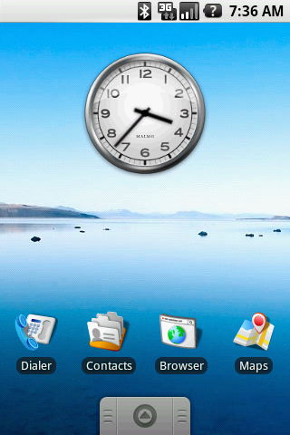
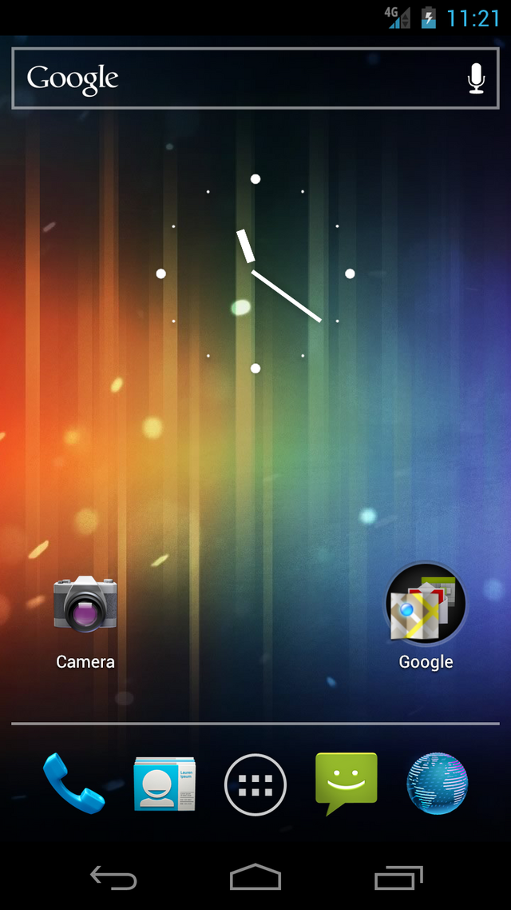
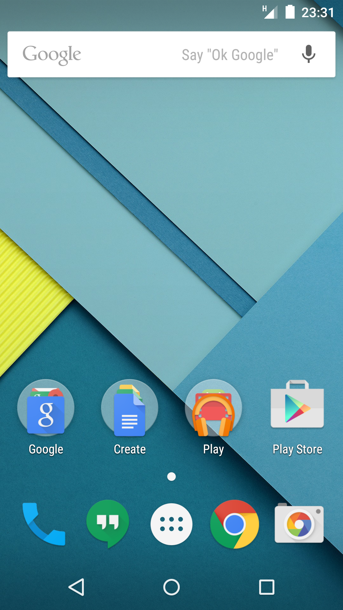

Het grafisch ontwerp van Android

Pre Holo
Voordat Holo werd uitgebracht had Android niet echt een ontwerp taal. Er waren icoontjes voor de ingebouwde apps die gewoon als basis dienden. Elke app had zijn eigen grafische interface door het gebrek aan richtlijnen en er werd meer focus gelegd op de functionaliteit en de opties. De bedrijven die telefoons met Android maakten gaven hun eigen gebruiks interface aan Android, zoals Samsung met TouchWiz. Dit liep zo van Android Donut tot Android Gingerbread.
Herkenbaar aan:
- Variabiliteit in ontwerp
- Simpel en basis grafisch ontwerp
- Gebrek aan ontwerp regels

Holo
The Holo design era marked a significant shift in Android's appearance. Introduced with Android 4.0 (Ice Cream Sandwich), Holo brought consistency, cleaner typography, and a more polished look. It introduced design guidelines for developers, resulting in more unified app experiences. Android 3 Honeycomb kwam met een nieuwe gebruiks interface. Deze had een grote impact op het uiterlijk van Android. Android 3 was enkel voor tablets. Eventjes later kwam Android 4.0 Ice Cream Sandwich. Deze update bracht het nieuwe ontwerp naar Android op mobiele telefoons, genaamd Holo. Holo zorde voor een veel meer consistent ontwerp waarbij er eindelijk regels waren over hoe je de interface van je programma moet maken.
Herkenbaar aan:
- Verenigde ontwerp taal
- Nette text en visueel
- duidelijke ontwerp regels

Material Ontwerp
Material, geïntroduceerd in 2014 met Android 5.0 (Lollipop), was een grote vooruitgang in het Android ontwerp. Het focuste op realistisch licht en beweging met meer kleur en een moderner ontwerp, wat zorgde voor een betere gebruikservaring. Material Design introduceerde diepte, animaties, and veel kleuren wat voor een meer interactieve ervaring zorgde. Het kleurrijke en plattere ontwerp is een beetje gelijk Metro in Windows 8, maar Material heeft nog de schaduw effecten en lichte randjes van Holo.
Herkenbaar aan:
- Realistische belichting en bewegingen
- Diepte, schaduw en cirkelvormige animaties op knoppen
- Felle kleuren en plat uiterlijk